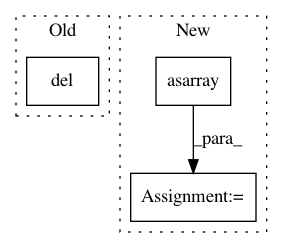

31775c422876534b0df7f26d253f2380db90d4b0,pynets/dmri/track.py,,prep_tissues,#Any#Any#Any#Any#Any#Any#,51
Before Change
include_map[background > 0] = 1
tiss_classifier = ActStoppingCriterion(include_map, vent_csf_in_dwi_data)
del background
del include_map
elif tiss_class == "bin":
tiss_classifier = BinaryStoppingCriterion(wm_mask_data.astype("bool"))
elif tiss_class == "cmc":
voxel_size = np.average(mask_img.header["pixdim"][1:4])
After Change
// Load tissue maps and prepare tissue classifier
wm_img = nib.load(wm_in_dwi)
gm_img = nib.load(gm_in_dwi)
gm_mask_data = np.asarray(gm_img.dataobj)
wm_mask_data = np.asarray(wm_img.dataobj)
vent_csf_in_dwi_data = np.asarray(nib.load(vent_csf_in_dwi).dataobj)
if tiss_class == "act":
background = np.ones(mask_img.shape)
In pattern: SUPERPATTERN
Frequency: 3
Non-data size: 3
Instances
Project Name: dPys/PyNets
Commit Name: 31775c422876534b0df7f26d253f2380db90d4b0
Time: 2020-03-21
Author: dpisner@utexas.edu
File Name: pynets/dmri/track.py
Class Name:
Method Name: prep_tissues
Project Name: BVLC/caffe
Commit Name: 5d584c27f062e9557aa920af6758b995f4094ed9
Time: 2014-05-16
Author: shelhamer@imaginarynumber.net
File Name: python/caffe/pycaffe.py
Class Name:
Method Name: _Net_forward_backward_all
Project Name: BVLC/caffe
Commit Name: 5d584c27f062e9557aa920af6758b995f4094ed9
Time: 2014-05-16
Author: shelhamer@imaginarynumber.net
File Name: python/caffe/pycaffe.py
Class Name:
Method Name: _Net_forward_all